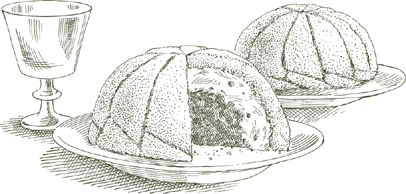
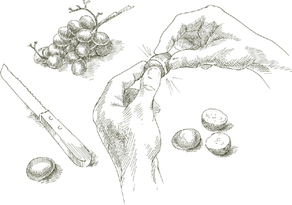
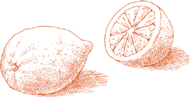

Крокканте Это самое темное, хрустящее и наименее сладкое из пралине, неотразимая конфета, которая затмевает большинство десертов и которую удивительно легко приготовить дома. Подавайте его вместе с послеобеденным кофе или посетителям в любое время, когда они могут зайти, спрячьте немного в сумке, когда собираетесь в путешествие, или раздавите, измельчите и используйте в качестве начинки для мороженого или для смешивания с глазурью других десертов. Вы можете хранить его неделями в плотно закрытой банке или завернутой в алюминиевую фольгу, но как только вы начнете грызть, он не прослужит долго.
От 4 до 6 порций конфет, около 2½ чашки, если раздавить
6 унций, около 1½ стакана, очищенного миндаля с кожурой.
1 стакан сахарного песка с горкой
Большой лист прочной алюминиевой фольги, разложенный на столе и смазанный 1 чайной ложкой растительного масла.
Очищенный картофель
1. Опустите миндаль в кастрюлю с кипящей водой. Через 2 минуты слейте воду, оберните их грубой тканью, смоченной холодной водой, и энергично потрите в течение минуты или двух. Разверните ткань, удалите очищенный от кожуры миндаль вместе со всей свободной кожурой, и, если остались орехи с кожурой, повторяйте операцию, пока все они не будут очищены дочиста. Выбросьте всю кожуру и очень мелко нарежьте миндаль ножом, а не кухонным комбайном, на кусочки размером примерно в половину рисового зерна.
2. Поместите сахар и ¼ стакана воды в небольшую, желательно легкую кастрюлю. Растопите сахар на среднем огне, не перемешивая его, но время от времени наклоняя сковороду. Когда растопленный сахар приобретет насыщенный желтовато-золотистый цвет, добавьте нарезанный миндаль и постоянно помешивайте, пока смесь миндаля и карамелизированного сахара не станет золотисто-коричневой. Налейте это немедленно поверх промасленной алюминиевой фольги. Разрежьте картофель пополам и плоской стороной распределите горячее пралине очень тонко, до толщины около ⅛ дюйма.
3. Если вы хотите использовать его как конфету: Разрежьте его на 2-дюймовые ромбы, прежде чем оно остынет. Когда они полностью остынут, снимите кусочки с фольги и положите их в банку с завинчивающейся крышкой или в пакеты из фольги, плотно заверните и храните в сухом прохладном шкафу.
Если вы хотите использовать его для начинки: Когда он полностью остынет, разломите его на кусочки и мелко измельчите в кухонном комбайне. Хранить в герметичной банке, но не хранить в холодильнике.
В Болонье рисовый пирог готовили только на Пасху, что было поводом для оживленного соперничества между семьями, утверждавшими, что у них самый вкусный и аутентичный рецепт. Приведенный здесь вариант пришел ко мне от известных болонских пекарей, сестер Симили, которые без колебаний заверили меня, что их версия самая вкусная и аутентичная. Я оставляю вопрос о подлинности тем, кто более охотно его обсуждает, чем я, но это факт: у меня никогда не было примера рисового пирога с лучшим вкусом.
На 6-8 порций
1 литр молока
¼ чайной ложки соли
2 или 3 полоски цедры лимона, только кожица, без белой сердцевины под ней
1 ¼ стакана сахарного песка
⅓ стакана риса, желательно импортного итальянского риса Арборио
4 яйца плюс 1 желток
½ стакана миндаля, бланшированного, очищенного от кожицы и нарезанного, как описано
⅓ стакана нарезанных засахаренных цитронов
Квадратная или прямоугольная форма для кекса на 6 чашек.
Сливочное масло для смазывания сковороды
Мелкие, сухие, неароматизированные панировочные сухари
2 столовые ложки рома
1. Положите молоко, соль, цедру лимона и сахар в кастрюлю и доведите до умеренного кипения.
2. Как только молоко начнет закипать, добавьте рис, быстро размешивая его деревянной ложкой. Отрегулируйте огонь так, чтобы варить при самом медленном кипении, и варите 2,5 часа, время от времени помешивая. Когда смесь будет готова, она превратится в плотную бледно-коричневую кашу. Большая часть мелкой цедры лимона должна раствориться, но если вы обнаружите ее кусочки, выньте их. Отставьте рисовую кашу в сторону, чтобы она остыла.
3. Разогрейте духовку до 350°.
4. Взбейте 4 яйца и желток в большой миске, пока все желтки и белки не смешаются равномерно. Добавьте рисовую кашу, взбивая ее с яйцами по ложке за раз. Добавьте нарезанный миндаль и засахаренный цитрон, равномерно перемешайте.
5. Обильно смажьте дно и стенки формы для кекса сливочным маслом. Посыпьте форму панировочными сухарями, затем переверните ее и резко постучите по столу, чтобы стряхнуть крошки. Вылейте смесь из миски в кастрюлю, разровняв ее. Поставьте форму на среднюю решетку разогретой духовки и запекайте 1 час.
6. Как только вы достанете форму из духовки, пока пирог еще горячий, проколите его вилкой в нескольких местах и полейте ромом. Когда пирог станет чуть теплым, переверните форму на сервировочное блюдо и встряхните или постучите ею по столу, чтобы пирог расшатался. Подавайте рисовый пирог не раньше, чем через 24 часа после его приготовления; если вы дадите ему созреть на 2–3 дня дольше, его вкус станет еще глубже и богаче. Чтобы подать его традиционным болонским способом, разрежьте торт, прежде чем подать его на стол, по диагонали, заштрихованным крестом, в результате чего получатся ромбовидные кусочки длиной около 2,5 дюймов.
На 6-8 порций
Сахарный песок, ½ стакана для карамели плюс ⅔ стакана для пудинга.
Круглая огнеупорная металлическая форма для выпечки на 6 чашек.
2 стакана молока
¼ чайной ложки соли
⅓ чашки манная крупа
1 столовая ложка сливочного масла
1 столовая ложка рома
¼ стакана ассорти цукатов, нарезанных кусочками толщиной ¼ дюйма
Тертая цедра 1 апельсина
Добавьте ⅓ стакана изюма без косточек, желательно мускатного сорта, замочите его в достаточном количестве воды, чтобы покрыть
Универсальная мука
2 яйца
1. Положите в форму ½ стакана сахара и 2 столовые ложки воды и доведите до кипения на плите на среднем огне. Не перемешивайте, а наклоняйте форму вперед и назад, чтобы переместить растопленный сахар до тех пор, пока он не приобретет светло-орехово-коричневый цвет. Немедленно снимите огонь и быстро наклоните форму во всех направлениях, пока карамелизированный сахар еще жидкий, чтобы равномерно покрыть форму. Продолжайте поворачивать форму, пока карамель не застынет, затем отставьте в сторону.
2. Разогрейте духовку до 350°.
3. Поместите молоко и соль в кастрюлю и убавьте огонь до минимума. Когда молоко дойдет до кипения, добавьте манная крупа, вливая его тонкой струйкой и быстро помешивая венчиком. Продолжайте готовить, постоянно помешивая, пока манная крупа и молочная смесь легко отделится от стенок кастрюли. Снимите с огня, но продолжайте помешивать еще полминуты или около того, пока не убедитесь, что манная крупа смесь не прилипает к сковороде.
4. Добавьте ⅔ стакана сахара, перемешайте, затем добавьте масло и ром и тщательно перемешайте. Добавьте цукаты и тертую апельсиновую цедру, помешивая, чтобы они распределились равномерно.
5. Слейте воду с изюма и промокните его тканевым полотенцем. Положите их в сито и посыпьте мукой, встряхивая сито. Когда изюм будет равномерно и слегка покрыт мукой, добавьте его в смесь на сковороде.
6. Разбейте яйца в манная крупа смеси, быстро взбивая их венчиком. Вылейте смесь в форму для карамелизации и поставьте ее на среднюю решетку разогретой духовки. Выпекать 40 минут.
7. Достаньте форму из духовки и дайте пудингу остыть. Затем поставьте в холодильник на ночь. На следующий день поставьте форму на плиту на слабый огонь, ровно настолько, чтобы карамель стала мягче. Снимите с огня, поставьте блюдо на форму, крепко сожмите обе части кухонным полотенцем, переверните их и несколько раз резко дерните кастрюлю по форме, пока не почувствуете, что пудинг разжижается. Снимите форму, выкладывая пудинг на блюдо.
На 6-8 порций
Сахарный песок, 1 стакан для карамели плюс ⅓ стакана для пудинга
Прямоугольная огнестойкая металлическая форма для кексов или хлеба на 8 чашек.
2½ стакана черствого белого хлеба хорошего качества, срезанного с корочки, слегка поджаренного и нарезанного
4 столовые ложки (½ палочки) сливочного масла
2 стакана молока
½ стакана изюма без косточек, желательно мускатного сорта, замочить в достаточном количестве воды, чтобы покрыть его.
Универсальная мука
¼ стакана пиньоли (кедровые орехи)
3 яичных желтка
2 яичных белка
¼ стакана рома
1. Положите в кастрюлю 1 стакан сахара и 3 столовые ложки воды и карамелизируйте, следуя указаниям шага 1 предыдущего рецепта манного пудинга.
2. Разогрейте духовку до 375°.
3. Положите нарезанный хлеб и масло в миску.
4. Налейте молоко в небольшую кастрюлю, включите средний огонь и, как только в молоке образуется кольцо из крошечных пузырьков, вылейте его на хлеб с маслом. Не перемешивайте, дайте хлебу настояться в молоке и дайте ему остыть. Когда остынет, взбейте венчиком или вилкой до образования мягкой однородной массы.
5. Слейте воду с изюма и промокните его тканевым полотенцем. Положите их в сито и посыпьте мукой, встряхивая сито. Когда изюм равномерно и слегка покроется мукой, смешайте его с взбитой хлебной массой.
6. Добавьте в миску ⅓ стакана сахара, кедровые орехи и яичные желтки и тщательно перемешайте с другими ингредиентами.
7. В отдельной миске взбейте яичные белки до устойчивых пиков, затем аккуратно добавьте их в хлебную смесь.
8. Переложите хлебную смесь в форму для карамелизации, выровняйте ее и поставьте форму на среднюю решетку разогретой духовки. Через 1 час уменьшите температуру термостата до 300° и выпекайте еще 15 минут.
9. Как только вы достанете форму из духовки, пока пудинг еще горячий, проткните ее в нескольких местах вилкой и залейте 2 столовыми ложками рома. Когда ром впитается, переверните кастрюлю на сервировочное блюдо и встряхните или постучите ею по столу, чтобы пудинг растекся. Поднимите кастрюлю, выложите пудинг на блюдо, проткните пудинг в нескольких местах и залейте оставшимися 2 столовыми ложками рома. Прежде чем подавать пудинг, дайте ему настояться минимум сутки. Вы можете хранить его в холодильнике на несколько дней, но прежде чем подавать на стол, дайте ему нагреться до комнатной температуры.
Сбриччолона— буквальное значение слова «та, что рассыпается» — сухой бисквитный пирог, который очень вкусен после ужина со стаканом Вин Санто или портвейна, и он одинаково приветствуется между приемами пищи, например, в качестве утреннего перекуса или с послеобеденной чашкой чая или кофе.
Он действительно крошится, и отчасти его очарование заключается в неровности частей, на которые он разбивается. Однако если вы предпочитаете подавать его аккуратными клиновидными порциями, режьте его, пока он теплый, пока он не затвердел. Сбриччолона прекрасно хранится в течение многих дней, завернутый в фольгу или хранящийся в жестяной коробке для печенья.
Моё первое знакомство с сбриччолона состоялся в Ферраре, в университете которой я учился. Но когда вы путешествуете по северной Италии, вы обнаружите сбриччолона в других местах, особенно в Мантуе, а также в винодельческой стране Ланге в Пьемонте, где его готовят из фундука вместо миндаля.
На 6 порций
¼ фунта миндаля, бланшированного и очищенного от кожицы как описано
1½ стакана универсальной муки
⅔ стакана кукурузной муки
⅝ стакана сахарного песка
Цедру 1 лимона натереть на терке, не врезая в белую сердцевину под ней.
2 яичных желтка
8 столовых ложек (1 палочка) сливочного масла, размягченного до комнатной температуры, плюс еще немного для смазывания формы для кекса
12-дюймовая круглая форма для торта
1. Разогрейте духовку до 375°.
2. Измельчите миндаль без кожицы в порошок в кухонном комбайне, включая и выключая двигатель.
3. Положите в миску муку, кукурузную муку, сахарный песок, тертую цедру лимона и миндальную пудру и хорошо перемешайте. Добавьте 2 яичных желтка и перемешайте смесь руками, пока она не распадется на маленькие шарики. Добавьте размягченное сливочное масло, размешивая его пальцами, пока оно полностью не смешается с смесью. (Поначалу может показаться невероятным, что все ингредиенты можно смешать, но, поработав с ними несколько минут, вы обнаружите, что они слипаются, образуя сухое, рассыпчатое тесто.)
4. Смажьте дно формы для кекса сливочным маслом. Раскрошите тесто между пальцами на сковороде, пока оно не распределится равномерно. Поставьте форму в верхнюю треть разогретой духовки и запекайте 40 минут. Подавайте, когда он полностью остынет и затвердеет (см. вступительную заметку выше).
KСЕЙЧАС разнообразные имена —Кьяккьер делла Нонна, «бабушкина светская беседа» и фраппе самые распространенные — эти оладьи представляют собой ленты теста, скрученные в бантики и обжаренные. Вкус и нежная хрустящая текстура традиционных версий зависят от использования сала как в тесте, так и для жарки.
Если у вас есть непреодолимые возражения против сала, его можно заменить сливочным и растительным маслом, как указано ниже.
На 4-6 порций
1⅔ стакана универсальной муки
¼ стакана сала ИЛИ масло
1 столовая ложка сахарного песка
1 яйцо
2 столовые ложки белого сухого вина
¼ чайной ложки соли
Сало или растительное масло для жарки
Кондитерский сахар
1. Смешайте муку с ¼ стакана сала или сливочного масла, сахарным песком, яйцом, белым вином и солью, замесив гладкое мягкое тесто. Положите тесто в миску, накройте пищевой пленкой и дайте постоять минимум 15 минут.
2. На слегка посыпанной мукой поверхности раскатайте тесто до толщины ⅛ дюйма, затем разрежьте его на ленты длиной около 5 дюймов и шириной ½ дюйма. Скрутите ленты и сделайте простые бантики.
3. Растопите на сковороде достаточно сала или налейте достаточно растительного масла, чтобы оно поднялось на 1 дюйм по краям сковороды. Увеличьте температуру до максимума. Когда жир станет очень горячим, положите столько бантиков из теста, сколько свободно поместится на сковороде. Обжарьте их до темно-золотистого цвета с одной стороны, затем переверните и обработайте другую сторону. Переложите их на охлаждающую решетку, чтобы они стекали. (Если вы используете сало, следите за тем, чтобы оно не перегрелось. Если вы почувствуете начало запаха гари, уменьшите огонь.) Повторяйте процедуру, пока все оставшиеся луки не будут готовы. Посыпьте сахарной пудрой и подавайте в горячем виде или при комнатной температуре. оладьи обычно исчезают так быстро, что вопрос о том, как их лучше всего хранить, может оставаться чисто теоретическим, но если некоторые из них остались, сложите их на тарелку и храните в шкафу. Они очень хорошо сохраняются в течение нескольких дней.
На 4-6 порций
3 яблока любого твердого, но не кислого кулинарного сорта
¼ стакана сахарного песка
2 столовые ложки рома
Цедру 1 лимона натереть на терке, не врезая в белую сердцевину под ней.
⅔ стакана универсальной муки
Растительное масло
Кондитерский сахар
1. Очистите яблоки, удалите сердцевину и нарежьте их ломтиками толщиной около ⅜ дюйма.
2. Сложите сахарный песок, ром и тертую цедру лимона в миску вместе. с ломтиками яблок. Переверните ломтики один или два раза и дайте настояться минимум 1 час.
3. Из муки и примерно 1 стакана воды сделайте тесто. пастелья тесто как описано.
4. Налейте в сковороду достаточно масла, чтобы оно поднималось по бокам на ½ дюйма, и включите сильный огонь.
5. Достаньте ломтики яблок из миски и промокните их бумажными полотенцами. Когда масло станет очень горячим, окуните их в тесто и выложите на сковороду столько штук, сколько поместится свободно. Обжарьте их до золотистого цвета с одной стороны, затем переверните и обжарьте с другой стороны. Переложите их на охлаждающую решетку, чтобы они стекали. Повторяйте процедуру, пока все оставшиеся ломтики не будут готовы. Посыпьте сахарной пудрой и подавайте горячими.
Является ТАМ любой другой десерт, например дипломатичноИнтересно, что вознаграждает такие небольшие усилия такими приятными результатами? Вам даже не придется включать духовку, потому что вы используете готовый кекс. Кусочки торта, пропитанного ромом и кофе, чередуются с простой муссовой смесью растопленного шоколада и яиц, вот и все. Вы не ошибетесь: добавьте немного меньше рома, добавьте немного больше шоколада, добавьте или уберите яйцо, и результат все равно будет большим успехом.
На 6-8 порций
ДЛЯ ЗАМАЧИВАНИЯ В РОМЕ И КОФЕ
5 столовых ложек рома
1¼ чашки крепкого кофе эспрессо
5 чайных ложек сахарного песка
5 столовых ложек воды
Примечание  Некоторые кексы впитывают больше, чем другие, и смеси рома и кофе может не хватить, чтобы пропитать все ломтики; имейте под рукой еще кофе и ром и при необходимости приготовьте еще, руководствуясь приведенными выше пропорциями.
Некоторые кексы впитывают больше, чем другие, и смеси рома и кофе может не хватить, чтобы пропитать все ломтики; имейте под рукой еще кофе и ром и при необходимости приготовьте еще, руководствуясь приведенными выше пропорциями.
Торт весом 16 унций
Марля
Прямоугольная форма для торта диаметром 9 дюймов (если вы хотите, чтобы десерт был высоким, а не широким, используйте узкую форму для хлеба).
4 яйца
1 чайная ложка сахарного песка
Пароварка
6 унций полусладкого шоколада каплями, нарезанного или натертого квадратиками
ГРАРУИЗМА
(Если вы предпочитаете шоколад)
4 унции полусладкого шоколада каплями, нарезанным или натертым квадратиками
1 чайная ложка сливочного масла
1 столовая ложка густых взбитых сливок
(Если вы предпочитаете взбитые сливки)
1 чашка очень холодных густых взбитых сливок
1 чайная ложка сахарного песка
Медная или другая миска для смешивания, хранящаяся в морозильной камере.
гарнир
Свежие ягоды ОR грецкие орехи и цукаты для шоколадной глазури или глазури из взбитых сливок.
1. Для замачивания с ромом и кофе: В небольшой миске смешайте ром, эспрессо, сахар и воду. Разрезаем бисквит на ломтики толщиной полсантиметра. Смочите марлю водой и выстелите ею внутреннюю часть формы для кекса, оставив достаточно остатков, чтобы они могли выйти за пределы формы и позже накрыть торт. Промокните кекс, кусочек за ломтиком, в смеси рома и кофе, затем выложите ломтики дна и стенок формы. Не оставляйте зазоров, заделывая при необходимости кусочками намоченного бисквитного пирога. Обмакивайте ломтики торта в смесь и вынимайте ее довольно быстро, иначе они станут слишком сырыми, чтобы их можно было взять с собой. Если у вас закончился ром и кофе, смешайте еще немного.
2. Для шоколадной начинки: Отделяем яйца, взбиваем желтки с 1 чайной ложки сахара, пока они не станут бледно-желтыми.
3. Налейте воду на дно пароварки, доведите ее до слабого, но устойчивого кипения, затем положите шоколадные капли или нарезанный или тертый полусладкий шоколад в верхнюю часть пароварки. Когда шоколад растает, выливайте его понемногу на яичные желтки, быстро перемешивая, пока весь шоколад полностью не смешается с яичными желтками.
4. Взбейте яичные белки в миске до устойчивых пиков. Смешать 1 столовую ложку яичного белка в смесь шоколада и яичного желтка, затем добавьте остаток, аккуратно складывая, чтобы не сплющить.
5. Выложите шоколадную начинку в форму поверх ломтиков торта, пропитанных ромом и кофе. Сверху накройте еще кусочками торта, пропитанными ромом и кофе, и накройте их влажной марлей, выступающей за край формы. Охладите как минимум до следующего дня.
6. Достав торт из холодильника, разверните марлю, оттягивая ее сверху. Переверните форму на блюдо и резко встряхните ее, чтобы пирог расшатался и он упал на блюдо. Снимите марлю, закрывающую его.
7. Если глазурь шоколадная: Доведите воду до кипения на дне пароварки. Сверху положите 4 унции шоколадных капель или нарезанный или тертый полусладкий шоколад вместе с 1 чайной ложкой масла. Когда шоколад растает, добавьте 1 столовую ложку густых сливок. Равномерно распределите глазурь по верху и бокам изделия. дипломатично. Охладите примерно на час, пока шоколад не затвердеет.
Если глазурь взбитыми сливками: Положите 1 стакан очень холодных густых сливок и 1 чайную ложку сахара в миску, которую вы хранили в морозильной камере. Взбейте его венчиком, пока он не станет жестким. Используйте его, чтобы покрыть верх и бока торта.
Украсьте торт простой композицией из грецких орехов и цукатов, свежей малины, черники или других ягод.
Предварительное примечание Вы можете оставить дипломатично в холодильнике на срок до недели, прежде чем переходить к следующему шагу.

TШЛЯПА ЭТО куполообразный десерт — флорентийский деликатес, судя по всему; в чем нет общего согласия, так это в том, является ли это название ласковым отсылкой к куполу, возвышающемуся над горизонтом Флоренции, или менее чем почтительным выражением намек на духовенство, поскольку на тосканском диалекте тюбетейку кардинала еще называют цуккотто. Как бы то ни было, оно могло получить свое название, цуккотто — еще одно из тех восхитительных кондитерских изделий, которые так легко взять и, к счастью, так же легко приготовить. Это может выглядеть как триумф кондитера, но наибольшее требование к его приготовлению предъявляет сборка далеко не устрашающего списка из преимущественно готовых компонентов.
На 6 порций
2 унции очищенного миндаля, бланшированного и очищенного от кожицы как описано
2 унции очищенного цельного фундука
Миска емкостью 1,5 литра, дно как можно более круглое.
Марля
Пирог весом от 10 до 12 унций
3 столовые ложки коньяка
2 столовые ложки ликера Мараскино (см. примечание ниже)
2 столовые ложки Куантро или белого ликера Кюрасао
5 унций полусладкого шоколада в каплях или квадратиках
Миска для смешивания хранится в морозильной камере
2 чашки очень холодных густых взбитых сливок
¾ стакана кондитерского сахара
Пароварка
Примечание Мараскино — изысканный итальянский ликер, приготовленный из мякоти и измельченных косточек далматинцев. мараска вишня с характерным вкусом, который не может повторить ни одна другая фруктовая настойка. Одно из наиболее привлекательных применений — маринованные свежие фрукты. Не путайте ликер с одноименной вишней; последние представляют собой вполне обычную консервированную и искусственно окрашенную вишню. Идеальной замены Мараскино не существует, но если вам необходимо использовать что-то другое, поищите не слишком сладкий вишневый ликер.
1. Разогрейте духовку до 375°.
2. Когда духовка достигнет заданной температуры, выложите очищенный миндаль на противень и поставьте его на самую верхнюю решетку разогретой духовки на 5 минут. Следите за орехами, чтобы они не подгорели. (Не выключайте духовку, когда вынимаете миндаль.) Нарежьте миндаль довольно крупно вручную или в кухонном комбайне, включая и выключая лезвие.
3. Выложите очищенный фундук на противень и запекайте в горячей духовке 5 минут. Выньте их и сухим грубым полотенцем сотрите с них как можно больше кожицы. Порубите довольно крупно, как миндаль.
4. Выстелите внутреннюю часть круглой миски слоем увлажненной марли.
5. Нарежьте большую часть бисквита ломтиками толщиной ⅜ дюйма. Разделите каждый ломтик по диагонали пополам, получив два треугольных куска, каждый с корочкой с двух сторон.
6. Смешайте коньяк, мараскино и куантро в небольшой миске или глубоком блюдце. Ложкой посыпьте каждый кусок торта небольшим количеством ликерной смеси, оставив часть смеси на потом. Выложите внутреннюю часть миски смоченным бисквитным пирогом, узкий конец каждого куска должен быть обращен ко дну миски. Когда вы кладете треугольники кекса рядом, оставьте сторону с корочкой рядом со стороной без корочки. Когда вы разворачиваете цуккотто, тонкие линии корочки образуют узор солнечных лучей. Убедитесь, что вся внутренняя поверхность чаши покрыта тортом. Если вам нужно нарезать больше торта, сделайте это. Если есть пробелы, заполните их небольшими кусочками смоченного коржа, не беспокоясь о том, какой узор они образуют. Определенная степень неровности привлекательна как признак ручной работы десерта.
7. Если вы используете шоколадные капли, порежьте их, если используете квадратики, нарежьте довольно крупно.
8. Достаньте миску из морозилки, добавьте густые сливки и сахарную пудру и взбивайте венчиком, пока крем не загустеет. Добавьте к нему 3 унции шоколада, а также весь измельченный миндаль и фундук, распределив их равномерно. Выложите половину смеси взбитых сливок в выложенную тортом миску, равномерно распределив ее тыльной стороной ложки или лопаточкой по всей подкладке торта. У вас должно остаться углубление в центре.
9. Растопите оставшиеся 2 унции шоколада в верхней части пароварки. как описано. Смешайте растопленный шоколад с оставшейся половиной смеси взбитых сливок и выложите на торт, заполняя полость. Обрежьте кусочки торта, выступающие за верхний край миски. Подсчитайте, сколько еще ломтиков торта вам понадобится, чтобы накрыть верх миски, смочить их остатками ликера и положить поверх крема. Их внешний край должен совпадать с верхним краем торта, обрамляющим боковые стороны чаши, таким образом герметично закрывая цуккотто. Накройте полиэтиленовой пленкой и поставьте в холодильник на ночь или до 2 дней.
10. Достав миску из холодильника, снимите пищевую пленку и переверните миску вверх дном на блюдо. Снимите чашу, оставив цуккотто на блюде и осторожно снимите марлю. Подавайте, пока он еще холодный.
Из ингредиентов и материалов приведенного выше базового рецепта исключите пароварку, взбитые сливки, сахарную пудру и миску в морозильной камере. Имейте под рукой 1 чашку мороженого высшего качества из темного шоколада (см. Итальянская кухня Марселлы, стр. 320) и 1 чашка домашнее мороженое с яичным заварным кремом или ванильное мороженое высшего качества.
• Следуйте инструкциям основного рецепта вплоть до шага 7, пока не разделите шоколадные капли или не нарежете квадратики. Смешайте шоколадные капли или нарезанные квадратики с миндалем и фундуком. Разделите смесь на 2 равные части.
• Положите шоколадное и ванильное мороженое в отдельные маленькие миски или блюдца и размягчите их вилкой до однородной консистенции, но не позволяйте им таять.
• Добавьте шоколадное мороженое к одной половине измельченной ореховой смеси, а к другой половине — ванильное мороженое или мороженое с яичным заварным кремом.
• Распределите смесь мороженого с ванилью или яичным заварным кремом поверх торта, выстилающего форму, оставив полость в центре. Заполните полость шоколадным мороженым.
• Запечатайте цуккотто кусочки торта, как описано в основном рецепте, накройте бумагой для заморозки и поместите в морозильную камеру минимум на 3 часа. Перед подачей отправить в холодильник на 30 минут. Разверните форму, как описано в основном рецепте, и сразу подавайте.
Свежие каштаны становятся доступными в начале осени и продолжают поступать на рынок всю зиму. Консервированное мясо каштанов продается круглый год в банках и банках, но оно не заменит свежие орехи хорошего качества.

Как выбрать В Италии различают два типа съедобных каштанов; один маленький и плоский, в каждом колючем боре, содержащем их, их два, и он известен как Кастанья, коммуна, или каштан обыкновенный; другой больше и намного толще, в каждом боре только один, и он известен как Марроне. Следует искать именно последний, потому что его мякоть намного сочнее и слаще. По-настоящему свежие кожуры каштанов должны быть блестящими, без морщин, а орех должен быть тяжелым в руке.
Как подготовиться Весь секрет успешного приготовления свежих каштанов заключается в том, чтобы научиться разрезать их скорлупу так, чтобы при приготовлении легко отделялась и скорлупа, и жесткая тонкая кожица под ней.

• Промыв орехи в холодной воде, замочите их в теплой воде примерно на 20 минут; этот шаг смягчает их панцирь и облегчает разрезание.
• Когда орехи замачиваются, сделайте горизонтальный надрез, который частично окружает середину каждого из них, начиная с одного края плоской стороны, огибая выпуклую брюшную сторону каштана и заканчивая сразу за другим краем плоской стороны. Не разрезайте плоскую сторону и делайте надрез неглубоким, чтобы не впиться в мякоть каштана.

OВ ЭТИ ДНИ когда пелена серого воздуха Милана чудесным образом растворяется и сквозь просветы в городской черте видны выстроившиеся на горизонте горы, взгляд неудержимо притягивается к вечно белой вершине Монблана, сверкающей, как морозный мираж, в северном небе. Монте Бьянко, если называть гору ее итальянским именем, имеет тезку, которая осенью по требованию появляется на миланских столах: это пирамида из темного шоколада и пюре из свежих каштанов, увенчанная снежной вершиной взбитые сливки. Мы можем глубоко (хотя бы на мгновение) утешаться окончанием лета и приближением зимы согревающим ароматом и вкусом свежих каштанов. Монте Бьянко они находят себе самую выгодную работу.
На 6 порций
1 фунт свежих каштанов, замоченных и разрезанных как описано
Молоко
Соль
6 унций полусладкого шоколада каплями или нарезанными квадратиками
Пароварка
¼ стакана рома
Миска для смешивания хранится в морозильной камере
2 чашки очень холодных густых взбитых сливок
2 чайные ложки сахарного песка
1. Положите разрезанные каштаны в кастрюлю, обильно залейте водой, накройте кастрюлю крышкой, доведите воду до кипения и варите 25 минут после начала закипания. Вынимайте каштаны из воды по несколько штук, очищая их, пока они еще очень теплые. Обязательно удалите не только внешнюю оболочку, но и сморщенную внутреннюю кожуру, но не беспокойтесь о том, чтобы каштаны остались целыми, потому что позже вам придется их пюрировать.
2. Положите очищенные орехи в кастрюлю, залейте достаточным количеством молока и щепоткой соли. Готовьте при постоянном кипении, не накрывая кастрюлю, пока все молоко не впитается, около 15 минут.
3. Растопите шоколад в пароварке. как описано.
4. Пюрируйте каштаны в миску, пропуская их через пищевую мельницу с диском с большими отверстиями. Добавьте растопленный шоколад и ром, хорошо перемешав ингредиенты. Плотно накройте миску полиэтиленовой пленкой и поставьте в холодильник минимум на 1 час.
5. Пропустите смесь каштанового пюре и шоколада через пищевую мельницу, оснащенную тем же диском, и дайте ей упасть на круглое сервировочное блюдо. Сначала держите мельницу близко к краю блюда; По мере того, как вы пропускаете через нее смесь и когда она накапливается, постепенно приближайте пищевую мельницу к центру блюда по спирали вверх. Вам нужно распределить каштаны и шоколад на блюде так, чтобы они образовали конусообразную насыпь. Не похлопывайте его и не придавайте ему никакой формы, оставьте его таким, каким он был, когда его уронили с мельницы.
6. Положите сливки и сахар в миску, которую вы хранили в морозилке, и взбивайте венчиком до загустения. Используйте половину взбитых сливок, чтобы покройте вершину каштанового холма, опустившись примерно на две трети вниз. Он должен иметь естественный, «заснеженный» вид, поэтому пусть сливки стекают по холмику случайными выступами и впадинами.
7. Подавайте десерт с оставшимися взбитыми сливками для тех, кто хочет его. Монте Бьянко еще немного «снега».
Предварительное примечание Смесь каштанов и шоколада можно приготовить за день до этого момента и хранить в холодильнике, пока вы не будете готовы приступить к работе.
Предварительное примечание The Монте Бьянко может быть завершено, как описано выше, и подано через 4–6 часов. Охладите его, но не накрывайте крышкой. Также охладите оставшуюся половину взбитых сливок.
Как ПРОВИДЕНЦИАЛ каштанов, чтобы они были под рукой, когда дни короткие, а вечера длинные и холодные. Помню, будучи студентом университета, живя в неотапливаемой комнате, я почти с нетерпением ждал зимы, тех дней, которые закончатся сидением у камина с друзьями, горшком вареных каштанов и флягой крепкого молодого вина. Мой отец сказал бы, что каштаны и вино делают человека пьяным. Не доказано, что орехи делают вино более опьяняющим, но это правда, что вкус одного неудержимо приводит к глотку другого, и наоборот, и может потребоваться много времени, чтобы решить, пока вы продолжаете пробовать оба, хотите ли вы завершить вечер кусочком каштана или глотком вина.
На 4 порции
1 фунт свежих каштанов, замоченных и разрезанных как описано
1 чашка красного сухого вина, желательно Кьянти
Соль
2 целых лавровых листа
1. Положите разрезанные каштаны в кастрюлю с вином, небольшой щепоткой соли, лавровым листом и достаточным количеством воды, чтобы покрыть ее. Накройте кастрюлю крышкой и включите средний огонь.
2. Когда каштаны станут мягкими — это во многом зависит от свежести орехов, это может занять от 30 минут до 1 часа — откройте кастрюлю и дайте выкипеть всему вину, кроме 1–2 столовых ложек. Сразу же подавайте каштаны на стол, желательно в кастрюле или в теплой миске. Каждый будет чистить свою кожуру, и это часть удовольствия.
TЗДЕСЬ МОЖЕТ БЫТЬ Нет более соблазнительного запаха еды, чем запах каштанов, жарящихся на раскаленных углях. К сожалению, жареные каштаны, с которыми большинство из нас знакомо, относятся к уличным сортам: твердые, сухие, полуготовые и зачастую холодные. Тем не менее, каштаны легко запечь дома в духовке, и вкус будет таким же приятным, как и запах.
На 4 порции
1 фунт свежих каштанов, замоченных и разрезанных как описано
1. Разогрейте духовку до 475°.
2. Разложите надрезанные каштаны на противне и, когда духовка достигнет заданной температуры, поставьте их на среднюю решетку. Время от времени переворачивайте орехи, но не так часто, чтобы потерять тепло в духовке.
3. Когда каштаны станут мягкими (это займет от 30 до 45 минут, в зависимости от их свежести), снимите их с противня и плотно заверните в тканевое полотенце. Они будут немного выделять пар внутри полотенца, в результате чего шкурка будет легче отделяться. Через 10 минут разверните и подавайте.
IЕСТЬ У ВАС Сделанную для этой цели перфорированную сковороду или аналогичную сковороду, вы можете жарить каштаны на газовом пламени или на углях. Не кладите за один раз больше, чем поместится без штабелирования. Если вы делаете это на плите, используйте средний огонь; если это над древесным углем, то углей должно быть достаточно, чтобы обеспечить постоянный нагрев в течение примерно 40 минут. Если нагреть слишком сильно, орехи будут обуглены снаружи и недоварены внутри. Если тепла недостаточно, они вообще не приготовятся. Часто перемещайте каштаны, чтобы они не подгорели с одной стороны.
Они готовы, когда они полностью мягкие, когда их центры больше не мучнистые и сухие. Это займет от 30 минут до 45 минут, в зависимости от свежести и размера орехов. Когда закончите, заверните их в тканевое полотенце на 10 минут, чтобы кожица легко отделилась.
TОН МИНДАЛЬНЫЙ с большим отрывом является самым любимым орехом в итальянской выпечке, особенно в Венето, и полная антология итальянских миндальных десертов потребовала бы значительного тома. В этом рецепте нет яичных желтков и масла, в котором вместо целых яиц используются только белки, и получается твердый, но довольно легкий пирог.
На 6-8 порций
10 унций очищенного, но неочищенного миндаля, около 2 стаканов
1⅓ стакана сахарного песка
8 яичных белков
Соль
Цедру 1 лимона натереть на терке, не врезая в белую сердцевину под ней.
6 столовых ложек муки
Разъемная форма диаметром 8 или 9 дюймов.
Сливочное масло для смазывания формы
1. Разогрейте духовку до 350°.
2. Положите миндаль и сахар в блендер или кухонный комбайн и измельчите до мелкой консистенции, включая и выключая мотор.
3. Взбейте яичные белки с ½ чайной ложки соли до устойчивых пиков.
4. Добавьте к яичным белкам молотый миндаль и тертую цедру лимона, понемногу, аккуратно, но тщательно перемешивая. Белки могут немного сдуться, но если вы тщательно перемешаете, значительной потери объема быть не должно.
5. Добавьте муку, встряхивая ее понемногу через сито, и еще раз аккуратно перемешивая.
6. Густо смажьте сковороду сливочным маслом. Выложите тесто для кекса в форму, встряхивая ее, чтобы выровнять. Поставьте форму на средний уровень разогретой духовки и запекайте 1 час. Прежде чем вынуть пирог из духовки, проверьте его центр, проткнув его зубочисткой. Если он выйдет сухим, значит, пирог готов. Если этого не произошло, готовьте еще немного.
7. Когда закончите, разблокируйте форму и снимите пяльцы. Когда пирог немного остынет и станет чуть теплым, снимите его со дна формы. Подавайте, когда он полностью остынет. Если хранить его в жестяной коробке для печенья, он сохранится довольно долго.
На 8 порций
½ фунта очищенных грецких орехов
⅔ стакана сахарного песка
8 столовых ложек (1 палочка) сливочного масла, размягченного при комнатной температуре
1 яйцо
2 столовые ложки рома
Цедру 1 лимона натереть на терке, не врезая в белую сердцевину под ней.
1½ чайной ложки разрыхлителя
1 стакан муки
Разъемная форма диаметром 8 или 9 дюймов.
1. Разогрейте духовку до 325°. Когда температура достигнет заданной, разложите грецкие орехи на противне и поставьте в середину духовки. Через 5 минут достаньте грецкие орехи из духовки и поверните термостат на 350°.
2. Когда грецкие орехи остынут, положите их в кухонный комбайн вместе с 1 столовой ложкой сахара и измельчите мелко, но не в порошок, включая и выключая мотор. Выньте их из чаши комбайна и отложите в сторону.
3. Отложите 1 столовую ложку сливочного масла, чтобы потом смазать форму. Поместите оставшиеся 7 столовых ложек в комбайн вместе с остальным сахаром и измельчите до кремообразной консистенции. Добавьте яйцо, ром, цедру лимона и разрыхлитель и немного перемешайте, пока все ингредиенты не смешаются до однородной массы. Переложите содержимое кухонного комбайна в миску.
4. Добавьте в миску молотые грецкие орехи, равномерно втирая их в смесь ложкой или лопаточкой. Добавьте муку, встряхните ее через сито и объедините с другими ингредиентами, чтобы получилось довольно плотное и равномерно перемешанное тесто для торта.
5. Смажьте форму для кекса 1 столовой ложкой сливочного масла, слегка посыпьте мукой, затем переверните форму, постучав ею по столу, чтобы стряхнуть излишки муки. Выкладываем тесто, разравнивая его лопаткой. Поместите противень на верхний уровень духовки. Через 45 минут, прежде чем вынимать пирог из духовки, проверьте центр пирога, проткнув его зубочисткой. Если он выйдет сухим, значит, пирог готов. Если этого не происходит, готовьте еще 10 минут или около того.
6. Когда закончите, разблокируйте форму и снимите пяльцы. Когда пирог немного остынет и станет чуть теплым, снимите его со дна формы. Подавайте через 24 часа, когда вкус полностью раскроется. Если хранить его в жестяной коробке для печенья, он сохранится довольно долго.
Примечание Концентрированный вкус этого орехового пирога делает скромный кусочек вполне сытным. Прекрасно сочетается с чаем или кофе утром или днем. Если блюдо подается после ужина, его следует покрыть свежими взбитыми сливками.
TЕГО НЕЖНЫЙ ФРУКТОВЫЙ ТОРТ была описана как настолько простая, что только активная кампания саботажа могла разрушить ее. Это действительно просто, но выбор груш существенно повлияет на ее вкус. Когда он приготовлен из груш Бартлетт, он не так привлекателен, как из зимних сортов, таких как Боск или Анжу. В Италии можно выбрать длинную, тонкую коричневато-желтую грушу, известную как Conferenza.
На 6 порций
2 яйца
¼ стакана молока
1 стакан сахарного песка
Соль
1½ стакана универсальной муки
2 фунта свежих груш
9-дюймовая круглая форма для торта
Сливочное масло для смазывания формы и покрытия пирога.
½ стакана сухих, неароматизированных панировочных сухарей
НЕОБЯЗАТЕЛЬНЫЙ: 1 дюжина гвоздики
1. Разогрейте духовку до 375°.
2. Взбейте яйца и молоко в миске. Добавьте сахар и небольшую щепотку соли и продолжайте взбивать. Добавьте муку, тщательно перемешайте, чтобы получилось плотное тесто для торта.
3. Очистите груши, разрежьте их вдоль на две части, вычистите семена и сердцевину, затем нарежьте тонкими ломтиками шириной около 1 дюйма. Добавьте их в тесто в миске, равномерно распределив.
4. Обильно смажьте форму сливочным маслом, слегка посыпьте панировочными сухарями, затем переверните форму и резко постучите ею по столу, чтобы стряхнуть лишние крошки.
5. Выложите тесто в форму, разравнивая его тыльной стороной ложки или лопаточки. Кончиками пальцев сделайте сверху множество небольших углублений и наполните их кусочками сливочного масла. Нанизать необязательные гвоздики, распределив их произвольно, но отдельно. Поставьте форму в верхнюю треть разогретой духовки и запекайте 50 минут или пока верх не станет слегка окрашенным.
6. Пока он еще теплый, осторожно снимите пирог со дна формы, поднимите его лопаточками и переложите на блюдо. Его очень приятно подавать еще теплым или комнатной температуры.

WКУРИЦА JЭймс BЭАРД Побывав в Венеции много лет назад, он был очарован этим местным деликатесом, орехи и сухофрукты которого пахнут торговыми днями императорской Венеции с Ближним Востоком, и попросил меня предоставить рецепт.
Джим был удивлен, обнаружив, что в нем было только одно яйцо, но оно поднялось примерно на 2 дюйма, что немаловажно для этого насыщенного и плотного десерта. Его можно неплохо подавать с ложкой-двумя свежих взбитых сливок, но что нет?
На 6-8 порций
1 стакан кукурузной муки грубого помола
Соль
1½ столовые ложки оливкового масла первого отжима
Засыпаем ½ стакана сахарного песка
⅓ чашки пиньоли (кедровые орехи)
⅓ стакана изюма без косточек, желательно сорта мускат
1 чашка сушеного инжира, нарезанного кусочками толщиной ¼ дюйма
2 столовые ложки сливочного масла плюс еще для смазывания формы
1 яйцо
2 столовые ложки семян фенхеля
1 стакан универсальной муки
9-дюймовая круглая форма для торта
Мелкие, сухие, неароматизированные панировочные сухари
1. Разогрейте духовку до 400°.
2. Доведите до кипения 2 стакана воды в кастрюле среднего размера, затем убавьте огонь до среднего и добавьте кукурузную муку, вливая ее тонкой струйкой. Позвольте ему течь сквозь пальцы вашего частично сжатого кулака. Другой рукой постоянно помешивайте деревянной ложкой. Когда вся кукурузная мука будет внутри, добавьте соль и оливковое масло. Продолжайте помешивать около 15 секунд, пока каша не загустеет и не начнет отставать от стенок кастрюли при перемешивании. Снимите жару.
3. К кукурузной каше добавьте сахар, кедровые орехи, изюм, инжир, сливочное масло, яйцо и семена фенхеля и тщательно перемешайте, чтобы все ингредиенты смешались равномерно. Добавьте муку и хорошо перемешайте, чтобы получилось однородное тесто для торта.
4. Смажьте форму для кекса сливочным маслом, слегка посыпьте панировочными сухарями, затем переверните форму, постучав ею по столу, чтобы стряхнуть лишние панировочные сухари. Выкладываем тесто, разравнивая его лопаткой. Поставьте форму на верхний уровень духовки и запекайте 45–50 минут.
5. Хотя Пирог еще теплый, отделите его ножом от формы и переверните форму над тарелкой, слегка встряхнув ее, чтобы пирог упал на тарелку. Затем снова переверните пирог на сервировочное блюдо. Подавайте, когда он полностью остынет.
IВ СТРАНЕ к северу от Вероны производители винограда и оливок делят холмы с камнерезами, причем последние занимают возвышения, слишком высокие для процветания виноградных лоз и оливковых деревьев. Многие фермеры и каменщики также делят стол в Траттории Далла Роза, в древнем городе Сан-Джорджо, расположенном под вершиной одного из самых высоких холмов. Алда Далла Роза, матриарх, заведует кухней, а пекарем является ее дочь Нори. Этот удивительный и пикантный торт, в котором для сокращения используется только местное оливковое масло — возможно, лучшее в Италии — приготовлен по недатируемому рецепту, который Нори сохранил из немногих сохранившихся семейных письменных записей.
На 6 порций
2 яйца
½ стакана плюс 2 столовые ложки сахарного песка
Цедру 1 лимона натереть на терке, не врезая в белую сердцевину под ней.
Соль
⅓ стакана сухого вина Марсала
⅓ стакана молока
¾ стакана оливкового масла первого холодного отжима для теста и еще немного для формы
1 столовая ложка разрыхлителя
1½ стакана универсальной муки
Кастрюля емкостью 2¼ литра.
1. Разогрейте духовку до 400°.
2. Разбейте яйца в миску и взбейте их со всем сахаром, пока они не станут бледными и пенистыми.
3. Добавьте тертую цедру лимона, соль, марсалу, молоко и ¾ стакана оливкового масла.
4. Смешайте разрыхлитель с мукой, добавьте к остальным ингредиентам и тщательно перемешайте.
5. Смажьте внутреннюю часть формы тонким слоем оливкового масла, вылейте тесто в форму и запекайте в верхней трети разогретой духовки 50 минут.
6. Дайте пирогу остыть около 10 минут, освободите его от трубочки и стенок формы лезвием ножа, переверните, вынув из формы, и поставьте на решетку для остывания до комнатной температуры.

MОСТ IТАЛЬЯНСКИЕ ДЕСЕРТЫ покупаются в местной кондитерской, но некоторые обычно выпекаются дома, и в каждом регионе есть один или два блюда, которые являются его фирменными блюдами. Чамбелла — это традиционный домашний пирог моей родной Романьи, и, как и в случае с другими домашними традициями, в каждой семье есть свой собственный вариант. Некоторые используют анис вместе с цедрой лимона или вместо нее; другие добавляют в тесто белое вино. Каждый из них столь же «аутентичен», как и предыдущий. Ниже приведен рецепт, который использовала моя бабушка, и, как и все вкусы, с которыми человек растет, он мне нравится больше всего.
Дома, кажется, нет времени в день, которое не подходило бы для того, чтобы перекусить. чамбелла. Моя девяностосемилетняя мать до сих пор носит его с собой каждое утро. кофелат, большая чашка слабого эспрессо, разбавленного горячим молоком. По старинному фермерскому обычаю пирог в конце трапезы макают в бокал сладкого вина. В этом, как и во многих других случаях, когда речь идет об итальянской еде и напитках, фермерский путь вполне вознаграждает подражание.
На 8-10 порций
8 столовых ложек (1 палочка) сливочного масла
4 стакана неотбеленной муки
¾ стакана сахарного песка
2½ чайные ложки винного камня, который продается в аптеках как битартрат калия, и 1 чайная ложка бикарбоната соды. ИЛИ 3½ чайные ложки разрыхлителя
Соль
Цедру 1 лимона натереть на терке, не врезая в белую сердцевину под ней.
¼ стакана теплого молока
2 яйца
Тяжелый противень
Сливочное масло и мука для смазывания и присыпки противня
1. Разогрейте духовку до 375°.
2. Положите сливочное масло в кастрюлю и растопите его, не перегревая.
3. Положите муку в большую миску. Добавьте сахар, растопленное масло, винный камень, бикарбонат, небольшую щепотку соли, тертую цедру лимона и теплое молоко. Добавьте 1 целое яйцо и белок второго яйца. Добавьте желток второго яйца минус 1 его чайная ложка, которую вы отложите для «покраски» кольца позже. Тщательно перемешайте все ингредиенты, затем выложите их на рабочую поверхность и месите смесь несколько минут.
4. Сформируйте из теста большую колбаску толщиной около 2 дюймов и сформируйте из нее кольцо. Сожмите концы вместе, чтобы замкнуть кольцо. Смажьте поверхность отложенной чайной ложкой желтка и 1 чайной ложкой воды и сделайте несколько неглубоких диагональных надрезов.
5. Смажьте противень сливочным маслом, присыпьте его мукой, затем переверните и постучите им по столу, чтобы стряхнуть лишнюю муку. Положите кольцо в его центр и поместите лист на верхний уровень разогретой духовки. Выпекать 35 минут. Он должен увеличиться почти в два раза по сравнению с первоначальным размером. Переложите на решетку для охлаждения. Когда остынет, заверните в фольгу или храните в жестяной коробке для печенья, но не храните в холодильнике. Вкуснее всего подавать на следующий день.
55-60 печенек
11 унций миндаля, бланшированного и очищенного от кожицы, как описано
1 стакан плюс 3 столовые ложки сахарного песка
4 яичных белка
Соль
½ чайной ложки чистого ванильного экстракта
Сливочное масло для смазывания противня
1. Минимум за 30 минут до начала выпекания разогрейте духовку до 300°.
2. При использовании кухонного комбайна измельчите очищенный миндаль вместе с сахаром, включая и выключая комбайн.
Если вы используете нож, нарежьте миндаль очень мелко, желательно, пока он еще теплый, а затем смешайте его с сахаром.
3. Взбейте яичные белки в миске вместе со щепоткой соли до устойчивых пиков.
4. Смешайте яичные белки с миндально-сахарной смесью вместе с ванильным экстрактом.
5. Смажьте противень или неглубокую форму сливочным маслом. Соберите некоторые из ложкой выложите тесто для печенья, а другой ложкой выложите его на противень или форму. Держите холмики теста на расстоянии около 1,5 дюйма друг от друга. Не волнуйтесь, если они покажутся бесформенными: их итальянское имя означает «уродливый, но хороший»; ожидается, что они будут очень нерегулярными.
6. Выпекайте на средней полке разогретой духовки 30 минут. Разложите их на охлаждающей стойке. Эти печенье хранится очень долго, если хранить его в жестяной коробке для печенья.
Около 4 дюжин печенья
4 унции миндаля, бланшированного и очищенного от кожицы, как описано
½ стакана сахарного песка
2 яичных желтка
2 стакана неотбеленной муки с горкой
Соль
Цедру 1 лимона натереть на терке, не врезая в белую сердцевину под ней.
¼ стакана свежевыжатого лимонного сока
Сливочное масло для смазывания противня или формы
1 яйцо, слегка взбитое с 1 столовой ложкой воды
Кондитерская кисть
1. Минимум за 30 минут до начала выпечки разогрейте духовку до 400°.
2. При использовании кухонного комбайна измельчите очищенный миндаль вместе с сахаром, включая и выключая комбайн.
Если вы используете нож, нарежьте миндаль очень мелко, желательно пока он еще теплый, а затем смешайте его с сахаром.
3. Если вы используете кухонный комбайн, добавьте 2 яичных желтка, муку, щепотку соли, тертую цедру лимона и лимонный сок. Управляйте стальным лезвием, пока тесто не превратится в гладкий комок.
Если вы делаете это вручную, поместите смесь миндаля и сахара в миску и добавьте ингредиенты, как указано выше. Взбивайте тесто руками в течение 8–10 минут, пока ингредиенты не смешаются равномерно.
4. Смажьте противень или неглубокую форму сливочным маслом.
5. Слегка посыпьте мукой рабочую поверхность, скалку и руки. Вытяните из теста кусок размером с яблоко и раскатайте его толщиной ¼ дюйма. Используйте 2-дюймовую форму для печенья или стакан аналогичного диаметра, чтобы разрезать тесто на диски, и поместите диски не совсем от края до края. противень или противень. Обрывки теста смешайте, раскатайте и нарежьте еще на диски.
6. Когда вы раскатаете и разрежете все тесто, смажьте все диски сверху взбитым яйцом. Выпекайте 10 минут на средней полке разогретой духовки.
7. Когда закончите, переложите на решетку для охлаждения. Когда остынут, храните в коробке для печенья или банке для печенья, где они сохранятся в течение нескольких недель.
TВышка являются отличным печеньем-аперитивом.
3½ дюжины печенья
2 очень больших яйца
¼ стакана оливкового масла первого отжима
1½ стакана неотбеленной муки
1½ чайной ложки соли
½ чайной ложки черного молотого перца грубого помола
2½ чайные ложки разрыхлителя
Сливочное масло для смазывания формы
Кондитерская кисть
1. Разогрейте духовку до 375°.
2. Слегка взбейте яйца и вылейте все, кроме ½ столовой ложки, которую вы отложите для того, чтобы позже смазать печенье, в миску. Добавьте все остальные ингредиенты и тщательно перемешайте деревянной ложкой. Выложите тесто на слегка посыпанную мукой рабочую поверхность, присыпьте руки мукой и перемешайте несколько минут до получения гладкой, плотной массы. Если хотите, вы можете выполнить весь шаг с помощью кухонного комбайна. Плотно заверните тесто в пищевую пленку или алюминиевую фольгу и оставьте при комнатной температуре минимум на 30 минут.
3. Разделите тесто на две части. Посыпьте рабочую поверхность и скалку мукой и раскатайте тесто по одному куску до толщины не более ¼ дюйма. Используйте 2-дюймовую формочку для печенья или стакан аналогичного диаметра, чтобы разрезать тесто на диски. Сохраните обрезки.
4. Смажьте противень или форму сливочным маслом и выложите на него кружочки теста на расстоянии примерно 1½ дюйма друг от друга.
5. Ненадолго скатайте обрезки в шар, раскатайте его и нарежьте дисками, чтобы добавить к остальным.
6. Смажьте верх всех дисков яйцом, затем поставьте противень или противень на среднюю решетку разогретой духовки. Выпекать 12 минут.
7. Достаньте печенье из формы и дайте ему полностью остыть на решетке. Через день они будут еще вкуснее.
Крема, или паштетная крема если использовать его полное название, это основной заварной крем, используемый в качестве начинки во многих итальянских десертах, наиболее известный, пожалуй, в зуппа английский. Это несложно сделать, если вы терпеливый повар. Она не должна кипеть, но муке необходимо дать достаточно тепла и дать время раствориться, не оставив следов зернистости. Если заварной крем комковатый или имеет тестообразный привкус, это означает, что мука была приготовлена слишком поспешно, или недостаточно тщательно, или же это сочетание обеих причин.
Вы можете сделать крема прямо над пламенем в кастрюле с толстым дном, но если вы беспокоитесь о том, как держать огонь под контролем, используйте пароварку, следя за тем, чтобы вода в нижней половине оставалась при быстром кипении.
О 2½ чашки
4 яичных желтка
¾ стакана кондитерского сахара
¼ стакана муки
2 стакана молока
Цедру ½ лимона натереть на терке, не врезая в белую сердцевину под ней.
1. Положите яичные желтки и сахар в кастрюлю с толстым дном или в верхнюю часть пароварки. Выключив огонь, взбивайте желтки, пока они не станут бледно-желтыми и кремовыми. Постепенно добавляйте муку, взбивая ее по 1 столовой ложке за раз.
2. В другой кастрюле доведите все молоко почти до кипения, когда по краям начнут образовываться маленькие пузырьки.
3. Всегда выключая огонь, очень медленно добавляйте горячее молоко во взбитые яичные желтки, все время помешивая, чтобы избежать образования комочков.
4. Поставьте кастрюлю на слабый огонь или на нижнюю часть пароварки, в которой доведена до кипения вода, и варите около 5 минут, постоянно помешивая деревянной ложкой. Не доводите сливки до кипения, но иногда на поверхности могут появиться пузырьки. Заварной крем готов, когда он липнет к ложке, покрывая его средней густотой.
5. Снимите с огня, поместите кастрюлю с кремом в миску с ледяной водой и помешивайте несколько минут. Добавьте тертую цедру лимона и еще немного помешивайте, пока крем не остынет.
Предварительное примечание При необходимости крем можно приготовить за день-два. Переложите в стальной или керамический контейнер, прижмите полиэтиленовую пленку к поверхности крема и поставьте в холодильник.
IЕСТЬ вполне убедительное объяснение того, почему десерт описывается как английский, английский, я никогда с ним не сталкивался, но нет сомнений, почему его называют супом: он настолько пропитан заварным кремом, что напоминает хлеб, пропитанный крестьянскими супами. И как суп, его нужно есть ложкой.
Представленная здесь версия основана на плотной зуппа английский мы производим в Эмилии-Романье. Там находится настойка, которой смачивали бисквит. Алхермес смешанный с ромом. Алькермес, слегка пряный ликер с цветочным ароматом, получил свой красный цвет из-за тел сушеных кошенильных насекомых, в которых он был пропитан. Мне сказали, что его больше не производят, но в любом случае его нельзя найти за пределами Италии, поэтому нам всем приходится искать замену, которая нам понравится. Моя комбинация ликеров приведена ниже, но если вы не упускаете из виду ром, который важен для характера десерта, вы можете придумать свою собственную формулу.
Однако перед приготовлением заварного крема подготовьте спиртовую смесь и разрежьте бисквит, чтобы вы могли использовать его сразу же, как только он будет готов.
На 6 порций
Заварной крем, приготовленный из этот рецепт
Пирог весом 10 унций, нарезанный толщиной ¼ дюйма.
Кондитерская кисть
1 столовая ложка рома, смешанная с 2 столовыми ложками коньяка, 2 столовыми ложками драмбюи и 4 столовыми ложками Cherry Heering.
2 унции полусладких шоколадных квадратов, нарезанных
Пароварка
ДОПОЛНИТЕЛЬ: 1 унция нарезанного жареного миндаля
1. Выберите глубокую тарелку или миску, из которой будете подавать блюдо. зуппа. Смажьте дно формы 4-5 столовыми ложками горячего заварного крема.
2. Выложите дно формы слоем ломтиков бисквита, сложенных краями. Обмакните кондитерскую кисть в ликерную смесь и пропитайте ею корж. Сверху выложите треть оставшегося заварного крема. Накройте еще одним слоем нарезанного коржа и смажьте его половиной оставшейся ликерной смеси.
3. Доведите воду до кипения в нижней части пароварки. В верхнюю часть пароварки положите 2 унции измельченного шоколада. Когда шоколад растает, разделите оставшийся заварной крем на две части, смешайте с одной частью растопленный шоколад и намажьте им слой бисквита в форме.
4. Добавьте еще один слой ломтиков торта. зуппа, пропитать его оставшимися ликерами и покрыть последним слоем заварного крема. Сверху посыпьте по желанию жареным миндалем.
5. Накройте полиэтиленовой пленкой и поставьте в холодильник минимум на 2–3 часа, а лучше на день. Подавайте охлажденным.
Sandro’s в Нью-Йорке — это то место, куда я отправляюсь, когда после некоторого путешествия меня охватывает желание попробовать незатронутые вкусы итальянской домашней кухни. Прежде чем покрыть зуппа на оставшийся заварной крем намажьте 3 столовые ложки вишневого варенья — импортного итальянского производства. амарен сохранить, если найдешь, или английский Мореллоили другую вишню — поверх верхнего слоя бисквита, затем покрыть заварным кремом. Исключите измельченный миндаль.
TОН ТЕПЛЫЙ, пена с ароматом вина, которую мы называем Забальоне может быть единственное блюдо из взбитых яичных желтков. другого я не знаю. Поскольку яичные желтки быстро затвердевают на сильном огне, их легче приготовить. Забальоне выключите прямой нагрев в пароварке, как указано в последующих инструкциях. Однако если вы знаете, как контролировать этот вид приготовления, вы можете делать это прямо над пламенем, возможно, используя традиционную медную посуду с круглым дном и без футеровки. Забальоне горшок.
На 6 порций
4 яичных желтка
¼ стакана сахарного песка
Пароварка
½ стакана сухого вина Марсала
Примечание Смесь яичных желтков значительно увеличивается в объеме по мере ее взбивания и приготовления. Если ваша пароварка небольшая, лучше импровизировать, поставив одну кастрюлю хорошего размера в большую, в которой находится кипящая вода. Существуют подставки, сделанные специально для поддержки внутреннего горшка (полезный гаджет), но вы можете использовать для этой цели любую небольшую металлическую подставку.
1. Положите яичные желтки и сахар в верхнюю часть пароварки или во внутреннюю кастрюлю, как описано выше, и взбейте желтки венчиком или электрическим миксером, пока они не станут бледно-желтыми и кремовыми.
2. На дне пароварки или в кастрюле большего размера доведите воду до кипения.
3. Соедините две пароварки вместе или поместите меньшую кастрюлю с желтками в кастрюлю с водой. Добавьте Марсалу, постоянно взбивая. Смесь начнет пениться, затем набухнет в мягкую пенистую массу. Забальоне готов через 15 минут или меньше, когда образуются мягкие холмики.
Забальоне обычно подается теплым, либо разложенным в стеклянные чашки отдельно, либо с нарезанными спелыми фруктами, такими как персики или манго, либо с простыми пирожными. Это вкусно с Чамбелла. Холодная версия Забальоне Далее следует приготовленное из красного вина.
Используйте ингредиенты основного рецепта, приведенного выше, заменив ½ стакана марсалы 1 стаканом сухого красного вина. В идеале красное вино должно быть Бароло; было бы почти так же идеально, если бы это был Барбареско, но вы могли бы заменить его другими красными винами с полным вкусом, например тосканским полностью Санджовезе, хорошей Вальполичеллой или даже Калифорнийским Зинфанделем или Кот-дю-Рон.
Сделайте Забальоне следуя инструкциям предыдущего рецепта. Разложите его по отдельным порционным чашкам и поставьте в холодильник на 4–6 часов перед подачей.
На 6 порций
Пароварка
6 унций полусладкого шоколада, мелко нарезанного
4 яйца (см. предупреждение о сальмонелла)
2 чайные ложки сахарного песка
¼ чашки крепкого кофе эспрессо
2 столовые ложки темного рома
Миска для смешивания хранится в морозильной камере
⅔ чашки очень холодных густых взбитых сливок
1. Налейте воду на дно пароварки, доведите ее до слабого, но устойчивого кипения, установите над ней верхнюю часть пароварки и положите туда нарезанный шоколад, чтобы он расплавился.
2. Отделите яйца, положите желтки в миску вместе с сахаром и взбивайте, пока они не станут бледно-желтыми и кремовыми. Добавьте растопленный шоколад, кофе и ром и перемешайте лопаткой до однородной массы.
3. Достаньте миску из морозилки, положите туда сливки, взбейте венчиком до застывания, затем сложите в смесь шоколада и яичного желтка.
4. Положите яичные белки в миску, взбейте их до устойчивых пиков, затем аккуратно, но тщательно добавьте их в шоколадную смесь.
5. Разложите мусс по 6 отдельным сервировочным чашкам или бокалам, накройте полиэтиленовой пленкой и поставьте в холодильник на ночь. Его можно хранить даже 3 или 4 дня, но через первые 24 часа он может сморщиться и потерять часть своей кремовой консистенции.
TЕГО ИНТРИНГУЮЩЕ хорошее сочетание рикотта, ром и кофе, возможно, самый простой десерт, который я когда-либо учился готовить. Все это можно сделать менее чем за 3 секунды в кухонном комбайне или, для более плотной консистенции, взбив смесь двумя вилками, удерживая в одной руке. Обратите внимание: перед подачей крем необходимо оставить на ночь в холодильнике.
На 6 порций
1½ фунта свежего рикотта
⅔ стакана сахарного песка
5 столовых ложек темного рома
½ чашки плюс 2 столовые ложки очень крепкого кофе эспрессо
Гарнир: 36 зерен кофе эспрессо.
1. Поместите рикотта, сахар, ром и кофе в кухонный комбайн и измельчите до кремообразной консистенции.
2. Разлейте смесь в 6 отдельных стеклянных десертных купе и храните в холодильнике на ночь.
3. Непосредственно перед подачей разложите поверх сливок 6 свежих хрустящих кофейных зерен круговым или другим приятным узором. Подавайте холодным.
Примечание Не храните фасоль в холодильнике, иначе она станет сырой.
AХОТЯ крема фритта Это прекрасный сладкий кусочек, которым можно завершить трапезу. В Италии его также подают вместе с мясом в панировке, например, с телячьими котлетами, печенью или бараньими отбивными. Это классический компонент большого фритто мисто, Болоньезе жаркое-смешанное блюдо, в котором вы найдете не только жареное мясо в панировке, но и овощи, сыр и фрукты.
Заварной крем для крема фритта должно быть приготовлено из большего количества муки, чем тот это идет с зуппа английский, иначе оно будет слишком мягким для жарки. Чтобы мука смешалась равномерно и плавно, необходимо готовить ее на очень медленном огне и все время помешивать практически без перерыва. Но его удобно приготовить к вечеру пораньше или даже за день до него.
На 6 порций
2 яйца плюс 1 яйцо для панировки крема
Пароварка
½ стакана сахарного песка
½ стакана муки
2 стакана молока
2 небольшие полоски цедры лимона без белой сердцевины под ней
Мелкие, сухие, неароматизированные панировочные сухари, разложенные на тарелке.
Растительное масло
1. Выключив огонь, разбейте 2 яйца в верхнюю часть пароварки, добавьте сахар и взбивайте яйца до тех пор, пока они не смешаются равномерно и сахар почти полностью не растворится. Добавляйте муку по 1 столовой ложке за раз, пока она вся не смешается с яйцами.
2. Доведите молоко до кипения в небольшой кастрюле и, когда оно только начнет образовывать кольцо крошечных пузырьков, добавьте его к яйцам, взбивая по ¼ стакана за раз. Когда вы добавите все молоко, положите цедру лимона.
3. В нижней части пароварки доведите воду до самого слабого кипения, затем установите на нее верхнюю часть. Начинайте медленно, но стабильно помешивать. Через 15 минут можно немного увеличить огонь. Продолжайте варить и помешивать, пока сливки не станут густыми и однородными без привкуса муки, еще около 20 минут. Когда все будет готово, вылейте крем на увлажненное блюдо, распределив его толщиной около 1 дюйма. Прежде чем продолжить, дайте ему остыть.
4. Нарежьте кольдкрем ромбовидными кусочками длиной 2 дюйма. Оставшееся яйцо взбейте в суповой тарелке или небольшой миске. Обваляйте кусочки сливок в панировочных сухарях, обмакните их во взбитое яйцо, затем снова обваляйте в панировочных сухарях.
5. Налейте в сковороду достаточно растительного масла, чтобы оно поднималось по бокам на 1 дюйм, и включите средний огонь. Когда масло станет очень горячим, положите туда столько кусочков панированных сливок, сколько будет свободно. Когда с одной стороны у них образуется красивая золотистая корочка, переверните их и сделайте другую. сторона. Переложите на решетку для охлаждения, чтобы стечь. Повторите процедуру, если кусочков осталось еще для жарки. Подавайте горячим или не холоднее, чем чуть теплым. Если вы подаете в качестве десерта, вы можете посыпать сливки небольшим количеством сахарной пудры.
Предварительное примечание Вы можете хранить крем на этом этапе в течение нескольких часов или до следующего дня. Охладите его под полиэтиленовой пленкой.
TОН ОДИН десертов, которые я почти всегда включал в свои курсы. Мои ученики любят их есть, но они также рады обнаружить, что могут приготовить тесто на несколько часов раньше времени, и увидеть, насколько легко и быстро приготовить оладьи, даже если рецепт удваивается или утрояется для толпы.
На 4 порции
1. Поместите рикотта в миску и раскрошите его, используя две вилки, которые держите в одной руке.
2. Разбейте яйца в миску и смешайте их с рикотта.
3. Понемногу добавляйте муку, втирая ее в смесь рикотты и яиц двумя вилками, которые держите в одной руке, или лопаточкой. Добавьте сливочное масло, цедру лимона и небольшую щепотку соли, перемешайте их и взбивайте, пока все ингредиенты теста для оладий не смешаются равномерно.
4. Отложите тесто в сторону и дайте ему постоять минимум 2 часа, но не более 3,5 часов.
5. Налейте в сковороду достаточно масла, чтобы оно поднялось на ½ дюйма, и включите средний огонь. Когда масло станет достаточно горячим (если капелька теста, брошенная в него, мгновенно всплывет на поверхность, значит, оно готово), добавьте тесто по столовой ложке за раз. Снимите тесто с ложки, используя закругленный угол лопатки. Не кладите за один раз больше, чем поместится свободно, не перегружая кастрюлю.
6. Когда оладьи с одной стороны станут золотисто-коричневыми, поверните их. Если они не превращаются в маленькие шарики, значит, нагрев слишком сильный. Немного уменьшите его. Когда оладьи подрумянятся с обеих сторон, переложите их шумовкой или лопаткой на решетку для охлаждения, чтобы они стекали. Если тесто осталось, повторите процедуру, пока оно не будет использовано полностью.
7. Выложите оладьи на сервировочное блюдо, обильно полейте их медом и подавайте на стол. Возможно, они лучше всего еще горячие, но они очень хороши, даже когда они теплые или при комнатной температуре.
АмареттиИтальянские миндальные макароны со вкусом горького миндаля и фруктовых косточек являются классическим дополнением к итальянским печеным яблокам. Они поставляются парами в двух размерах: стандартном и миниатюрном. Приведенный ниже рецепт основан на стандартном размере.
На 4 порции
4 хрустящих, кисло-сладких яблока
9 пар импортных итальянских амаретти печенье
4 столовые ложки (½ пачки) сливочного масла, полностью размягченного при комнатной температуре
¼ стакана сахарного песка
½ стакана воды, смешанной с ½ стакана сухого белого вина
1. Разогрейте духовку до 400°.
2. Вымойте яблоки в холодной воде. Используйте любой подходящий инструмент, от ножа для удаления сердцевины яблок до заостренной овощечистки, чтобы удалить сердцевину сверху, не доходя до нижней части. Сделайте отверстие в центре шириной ½ дюйма. Проколите кожуру яблок во многих местах, примерно через каждый дюйм, используя острое лезвие ножа.
3. Сложите лист вощеной бумаги вдвое вокруг 7 пар амареттии отбивайте их тяжелым предметом, например молотком или молотком для мяса, пока они не раздавятся до крупной консистенции, но не в порошок. Тщательно перемешайте их с очень мягким сливочным маслом. Разделите смесь на 4 части и плотно уложите по одной части в каждую полость яблока.
4. Выложите яблоки в форму для запекания лицевой стороной вверх. Посыпьте каждую столовой ложкой сахара, залейте водой и белым вином. Поставьте форму на самую верхнюю решетку разогретой духовки и запекайте 45 минут.
5. Переложите яблоки на сервировочное блюдо или отдельные блюда, используя большую металлическую лопатку.
6. В форме для запекания останется немного жидкости. Отделите оставшиеся 2 пары амареттии окуните каждое печенье в форму, но не позволяйте ему стать слишком сырым, иначе оно раскрошится. Положите по одному печенью на отверстие каждого яблока.
7. Если форму для запекания нельзя поставить на прямой огонь, вылейте ее содержимое в кастрюлю и включите сильный огонь. Когда жидкость выкипит до сиропообразной консистенции, залейте ею яблоки. Подавайте при комнатной температуре.
Предварительное примечание Яблоки можно приготовить за 2–3 дня и хранить в холодильнике, но перед подачей верните их в комнатную температуру.
На 4 порции
1 фунт свежего черного винограда
2 столовые ложки муки
2 столовые ложки сахарного песка
Миска для смешивания хранится в морозильной камере
½ стакана очень холодных густых взбитых сливок
1. Очистите все ягоды винограда от плодоножек и промойте их в холодной воде. Вставьте диск с наименьшими отверстиями в пищевую мельницу и протрите весь виноград через мельницу в миску. Если вы предпочитаете использовать блендер или кухонный комбайн, сначала разрежьте ягоды и удалите из них семена.
2. Положите 1 стакан протертого винограда в небольшую кастрюлю. Добавьте муку, стряхнув ее через сито. Тщательно перемешайте, пока мука не смешается с виноградным пюре.
3. К оставшемуся в миске виноградному пюре добавьте сахар, помешивая до его полного растворения. Медленно вылейте содержимое миски в кастрюлю, постоянно помешивая.
4. Убавьте огонь под кастрюлей до минимума. Постоянно помешивайте и готовьте, пока виноградная смесь не закипит на медленном огне около 5 минут и не станет достаточно густой. При необходимости отрегулируйте огонь, чтобы кипение не превратилось в кипение.
5. Перелейте пудинг из формы в миску и дайте ему полностью остыть при комнатной температуре. Разложите пудинг по 4 отдельным стеклянным мискам, накройте полиэтиленовой пленкой и поставьте в холодильник минимум на 4 часа, но не на ночь, перед подачей на стол.
6. Непосредственно перед подачей достаньте миску из морозилки, добавьте сливки, взбейте венчиком до устойчивых пиков и распределите по 4 мискам.
AМОНГ ВСЕ ПУТИ Когда трапезу можно завершить ароматным завершением, ничто не может сравниться по освежению с этими нарезанными апельсинами, мацерированными в цедре лимона, сахаре и лимонном соке.
На 4 порции
6 сладких сочных апельсинов
Цедру 1 лимона натереть на терке, не врезая в белую сердцевину под ней.
5 столовых ложек сахарного песка
Свежевыжатый сок ½ лимона
1. Острым ножом очистите 4 из 6 апельсинов, удалив всю белую губчатую сердцевину и как можно большую часть тонкой кожицы под ней.
2. Нарежьте очищенные апельсины ломтиками толщиной менее ½ дюйма. Выбрать все семена. Выложите ломтики на глубокую тарелку или неглубокую сервировочную миску и посыпьте тертой цедрой лимона. Добавьте сахар. Выжмите оставшиеся 2 апельсина и добавьте их сок на блюдо или в миску. Добавьте лимонный сок, затем несколько раз аккуратно перемешайте, стараясь не сломать ломтики апельсина, когда вы их переворачиваете.
3. Накройте полиэтиленовой пленкой и поставьте в холодильник минимум на 4 часа или даже на ночь. Подавайте охлажденным, перевернув ломтики апельсина два-три раза после того, как вынули их из холодильника.
Примечание Я нахожу апельсины совершенно идеальными, но если вы хотите разнообразить их или придать им более праздничный и выразительный акцент, вы можете незадолго до подачи залить их 2 столовыми ложками одного из следующих ликеров: Куантро, белого Кюрасао или, лучше всего, Мараскино (см. примечание).
GЭОГРАФИЧЕСКИ ГОВОРИТЬМакедония — это регион в юго-восточной Европе, разделенный между бывшей Югославией, Грецией и Болгарией. Смешение народов, населяющих его, должно быть, и послужило причиной названия, ставшего прилагается к этому знаменитому фруктовому блюду, успех которого на самом деле зависит от как можно большего разнообразия ингредиентов.
Незаменим для фруктов. Македония это яблоки, груши, бананы, а также сок апельсинов и лимонов. К ним вам следует добавить как можно больше сезонных фруктов, выбирая их по разнообразию текстур, балансируя сочность и твердость, отдавая предпочтение спелости, но избегая мягкости.
На 8 и более порций
1½ стакана свежевыжатого апельсинового сока
Цедру 1 лимона натереть на терке, не врезая в белую сердцевину под ней.
2 или 3 столовые ложки свежевыжатого лимонного сока (только 1 столовая ложка, если вы используете дополнительный ликер)
2 яблока
2 груши
2 банана
1½ фунта других фруктов, таких как вишня, виноград, абрикосы, сливы, персики, ягоды, манго, дыня и мандарины в максимально разнообразном ассортименте.
От ⅓ стакана до ½ стакана сахарного песка по вкусу
ДОПОЛНИТЕЛЬНО: ½ чашка ликера Мараскино (см. примечание)
НЕОБЯЗАТЕЛЬНЫЙ: 3 столовые ложки грецких орехов или очищенного миндаля, поджаренных в духовке и крупно нарезанных
1. В супницу, чашу для пунша или другую большую сервировочную миску положите апельсиновый сок, тертую цедру лимона и лимонный сок.
2. Все фрукты, за исключением вишни, долек мандаринов, винограда и ягод, необходимо вымыть, очистить от кожицы, удалить сердцевину, если это применимо, и нарезать кубиками размером ½ дюйма. Добавляйте каждый фрукт в миску по мере его приготовления, чтобы цитрусовый сок не дал ему обесцвечиваться.
3. Вымойте вишню, виноград и ягоды. Разделите вишню и виноградные ягоды пополам, очистив вишню от косточек и вынув виноградные косточки, если они есть. Остальные ягоды, если это черника, малина или смородина, оставьте целыми. Положите в миску любую чернику или смородину. Если вы используете малину или клубнику, которая после замачивания в маринаде становится мягкой, добавьте ее за 30 минут до подачи. У клубники снимите стебли и разрежьте ягоды пополам, прежде чем добавлять их в соус. Македония.
4. Добавьте сахар, ликер и орехи (по желанию) и тщательно, но осторожно перемешайте, стараясь не размять более нежные фрукты. Накройте полиэтиленовой пленкой и поставьте в холодильник минимум на 4 часа, но не на ночь. Подавайте охлажденным, аккуратно перемешав все фрукты 2–3 раза перед подачей.
MАНГО НЕ родом из Италии, и абсолютная верность местным ингредиентам предполагает, что вы приготовите это блюдо с персиками. Если вы можете купить спелые и сочные персики, забудьте о манго. Я никогда не вижу таких персиков, за исключением недели или двух в августе, поэтому в остальное время года манго, несмотря на их экзотический вкус и текстуру, является более желанным выбором. Они обычно дешевле, когда уже созрели и готовы к употреблению. Если они все еще твердые, дайте им созреть в течение 2–4 дней дома при комнатной температуре, пока они не начнут поддаваться легкому надавливанию большим пальцем.
На 6 порций
2 небольших спелых манго ИЛИ 1 большой ИЛИ персики
1½ стакана свежей клубники
2 столовые ложки сахарного песка
Цедру 1 лимона натереть на терке, не врезая в белую сердцевину под ней.
1 чашка хорошего сладкого белого вина (см. примечание ниже)
Примечание Идеальное вино для мацерации фруктов — вино, приготовленное из москато, самый ароматный из всех сортов винограда. По всему итальянскому полуострову и за его пределами до сицилийских островов производят восхитительные сладкие мускатные вина, и если вы случайно встретите одно из них, не проходите мимо него. Если вам необходимо выбрать замену, подойдет любое прекрасное натуральное сладкое белое вино позднего сбора из Германии, Южной Африки или Калифорнии.
1. Очистите манго (или персики) и срежьте мякоть с косточек. Если вы используете персики, разделите их пополам и удалите косточку. Нарежьте фрукты на кусочки размером около 1 дюйма и положите их в сервировочную миску.
2. Вымойте клубнику в холодной воде, удалите стебли и листья и разрежьте ее вдоль пополам, если она не очень маленькая. Добавьте их в миску.
3. Добавьте в миску сахар, цедру лимона и вино и тщательно перемешайте фрукты, но осторожно, чтобы не повредить их. Охладите и дайте настояться 1-2 часа. Подавайте охлажденными, перемешав фрукты один или два раза, прежде чем подавать их на стол.

TОН КРАСИВЫЙ ваза с фруктами. Пурпурные сферы черного винограда делят пополам и удаляют семена, а удлиненные овалы без косточек белого винограда оставляют целыми. Их аромат и свежесть, мацерированные апельсиновым соком и цедрой лимона, неотразимы.
На 6-8 порций
1 фунт белого винограда без косточек
1 фунт крупного черного винограда, а не бледно-фиолетового винограда без косточек.
Цедру 1 лимона натереть на терке, не врезая в белую сердцевину под ней.
3 столовые ложки сахарного песка
Свежевыжатый сок из 3 апельсинов
1. Освободите все ягоды винограда от плодоножек и промойте их в холодной воде. В сервировочную миску кладите только белые.
2. Вам необходимо разрезать черный виноград пополам, чтобы извлечь из него косточки. (Красный виноград без косточек очень мягкий, и его не рекомендуется использовать для этого блюда.) Держите каждую ягоду стеблем вверх. Используйте острый нож для очистки овощей или, лучше, небольшой овощной нож с зазубренным лезвием, чтобы разрезать ягоду горизонтально вокруг середины, разрезая ее со всех сторон, но не до конца. Кончиками пальцев возьмитесь за верхнюю половину виноградины, а другой рукой открутите нижнюю половину. Из открытого центра одной из половинок вылезут семена; вытащите их и добавьте в миску обе половинки ягоды с семенами. Повторяйте процедуру, пока весь черный виноград не будет готов.

3. Добавьте в миску цедру лимона, сахар и апельсиновый сок. Если сока недостаточно, чтобы покрыть виноград, выжмите еще немного. Тщательно перемешайте, накройте полиэтиленовой пленкой и поставьте в холодильник на 2–3 часа перед подачей. Не оставляйте на ночь, потому что виноград может начать бродить.
Фруллато можно охарактеризовать как молочный коктейль для взрослых, заправленный достаточным количеством ликера, чтобы сделать его не только освежающим, но и интересным. Летом в Италии его заказывают в эспрессо-баре, но нет причин не иметь его дома и наслаждаться им в любое время суток. Вы можете сделать фруллати в кухонном комбайне, но если у вас есть блендер, он справится с этой задачей лучше.
На 2 порции
1 банан ИЛИ эквивалентное количество свежих персиков ИЛИ клубника ИЛИ малина
⅔ стакана молока
1½ чайной ложки сахара
3 столовые ложки колотого льда
2 столовые ложки ликера Мараскино (см. примечание)
Все фрукты необходимо мыть в холодной воде, кроме банана. Бананы или персики необходимо очистить от кожуры, последние без косточек и разрезать на кусочки. Поместите фрукты и другие ингредиенты в чашу блендера или комбайна и взбивайте — на высокой скорости, если используете блендер, — пока лед полностью не растворится, а фрукты не станут жидкими. Подавайте немедленно.

Наиболее распространенное объяснение разницы между мороженое и мороженое в том, что воздуха меньше мороженое; следовательно, он плотнее. Стало ли меньше воздуха или нет, я толком не знаю, но, похоже, это не имеет значения. я начал потреблять мороженое в тот момент, когда я научился ходить и держать конус одновременно, и для меня его характеризует не плотность, а легкость и свежесть вкуса. В нем гораздо меньше жира, меньше сливок, меньше яиц и нет масла. мороженое. Он никогда не бывает слишком сладким или перенасыщенным. Миссис Маршалл в жемчужине книги девятнадцатого века: Лед простой и необычный, возможно, не думал об этом мороженое, но она тем не менее, прекрасно резюмировал свою цель: «… [чтобы] доставить нёбу максимально возможное количество удовольствия и вкуса, в то же время … никоим образом не [наводить] на мысль о питательности и солидности».
Замораживание смеси мороженого Вылейте смесь, убедившись, что она уже остыла, в емкость мороженицы и заморозьте, следуя инструкциям производителя. Когда все будет готово, мороженое готов к употреблению, но если вы хотите подать его позже или предпочитаете, чтобы он был более компактным, переложите его в плотно закрывающийся контейнер и поместите в морозильную камеру. Если вы собираетесь оставить его в морозильной камере на ночь или дольше, дайте мороженое перед подачей немного размягчите, поставив в холодильник на 30 минут.
На 4 порции
½ фунта свежей клубники
¾ стакана сахарного песка
¼ стакана холодных густых взбитых сливок
Производитель мороженого
1. Очистите клубнику от листьев и стеблей, а ягоды разрежьте пополам, если они не очень маленькие. Ягоды промойте в холодной воде.
2. Положите клубнику со всем сахаром в чашу кухонного комбайна, обработайте несколько минут, затем добавьте ¾ стакана воды и продолжайте измельчать до тех пор, пока она не станет жидкой.
3. Взбивайте сливки, пока они слегка не загустеют, до консистенции пахты. Поместите сливки и пюре из клубники в миску и тщательно перемешайте.
4. Заморозьте, как описано выше.
На 4 порции
14 больших ИЛИ 18 сушеных черносливов меньшего размера
2 столовые ложки сахарного песка
½ стакана холодных густых взбитых сливок
Производитель мороженого
1. Положите чернослив, сахар и 1½ стакана воды в кастрюлю и доведите воду до кипения на среднем огне. Накройте крышкой и готовьте, пока чернослив не станет очень мягким, 10–15 минут, в зависимости от его размера.
2. Дайте черносливу остыть в жидкости кастрюли, затем достаньте его, не опорожняя кастрюлю, и удалите косточку. Положите чернослив без косточек в чашу кухонного комбайна, поработайте стальным лезвием на мгновение или два, затем добавьте жидкость из кастрюли и продолжайте обработку, пока чернослив не станет полностью пюре.
3. Взбивайте сливки, пока они слегка не загустеют, до консистенции пахты. Поместите сливки и пюре из чернослива в миску и тщательно перемешайте.
4. Заморозить как описано.
На 4 порции
⅔ стакана сахарного песка
1 фунт крупного черного винограда, а не бледно-фиолетового винограда без косточек.
¼ стакана холодных густых взбитых сливок
Производитель мороженого
1. Положите сахар и ½ стакана воды в небольшую кастрюлю, включите средний огонь и время от времени помешивайте, пока сахар полностью не растает. Перелейте сахарный сироп в миску.
2. Освободите виноградные ягоды от плодоножек и промойте их в холодной воде. Вставьте диск с наименьшими отверстиями в пищевую мельницу и протрите виноград через мельницу в миску с сахарным сиропом. Если через мельницу пройдет несколько кусочков кожицы винограда, это не проблема, но следите за тем, чтобы ни одна из косточек не попала в чашу. Не используйте кухонный комбайн, потому что он измельчит семена, выделяя вяжущее масло. Смешайте протертый виноград с сахарным сиропом и дайте полностью остыть.
3. Взбивайте сливки, пока они слегка не загустеют, до консистенции пахты. Добавьте сливки к виноградно-сахарному сиропу и тщательно перемешайте.
4. Заморозить как описано.
RЭТО ДАЕТ ЭТО мороженое по консистенции что-то среднее между густой слякотью и мягким мороженым, качество, которое кажется вполне подходящим для насыщенного, интенсивного бананового вкуса.
На 6 порций
От ¾ до 1 фунта спелых бананов
⅔ стакана сахарного песка
⅔ стакана молока
2 столовые ложки темного рома
Производитель мороженого
1. Очистите бананы, нарежьте их, положите в кухонный комбайн и превратите в пюре.
2. Добавьте в чашу комбайна сахар, молоко и ром и включите стальное лезвие еще на минуту.
3. Заморозить как описано. Когда вы достанете его из морозильной камеры, его не нужно темперировать, поскольку он особенно мягкий. мороженое.
I ВЗЯЛИ этот рецепт из Итальянская кухня Марселлы потому что ни один взгляд на искусство итальянских мороженщиков, каким бы поверхностным он ни был, не может не включить в себя любимый вкус Италии, мороженое ди крема— мороженое с яичным заварным кремом. И я не знаю более изысканной версии, чем эта, приготовленная в великолепном классическом ресторане Болоньи «Диана».
На 6-8 порций
6 яичных желтков
¾ стакана сахарного песка
2 стакана молока
Кожура ½ апельсина без белой сердцевины под ней.
1 столовая ложка ликера Гранд Марнье
Производитель мороженого
1. Положите яичные желтки и сахар в миску и взбивайте желтки, пока они не станут бледно-желтыми и не образуют мягкие ленты.
2. Положите молоко и цедру апельсина в кастрюлю, включите средний огонь и доведите молоко до медленного кипения, стараясь не дать ему закипеть.
3. Во взбитые желтки добавляем горячее молоко, вливая его тонкой струйкой через мелкое сито. Добавляйте понемногу, каждый раз останавливаясь, чтобы взбить с желтками.
4. Добавьте Гран Марнье, хорошо перемешайте.
5. Переложите смесь в кастрюлю, включите средний огонь и постоянно взбивайте около 2 минут, не давая закипеть, затем снимите с огня и дайте полностью остыть.
6. Заморозить как описано.
WКУРИЦА С ЗАВАРКОМ мороженое посыпанный порошковым эспрессо и залитый виски, это не просто еще один умный способ украшения мороженого: это сочетание неожиданных текстур и ароматов, которые оживляют друг друга и волнуют вкус.
Глубокий, двойной обжарки вкус кофе эспрессо имеет важное значение. Вы можете использовать его прямо из банки, но если его измельчить в порошок в высокоскоростном блендере, он станет более мелким.
Если вы спешите и у вас нет времени, чтобы сделать мороженое, вы можете заменить ванильное мороженое очень хорошего качества.
На 8 порций
Яичный заварной крем мороженое, сделанный с этот рецепт ИЛИ ванильного мороженого высшего качества на 8 порций
½ чашки молотого кофе эспрессо
Скотч ИЛИ Бурбон, около 1 столовой ложки на человека
Совок мороженое или ванильного мороженого в 8 отдельных тарелок, посыпьте каждую порцию 1 чайной ложкой молотого кофе эспрессо и налейте в каждую миску столько виски, чтобы осталось на дне, примерно 1 столовая ложка. Подавайте сразу.

IВАША ОЦЕНКА очень похоже на венецианский ресторан, в конце еды официант может спросить, не желаете ли вы Сгроппино. Если вы скажете «да», он поставит на сервировочной тележке возле вашего стола две миски: одну с лимонным мороженым и одну с холодным пюре из клубники, венчик и бутылку игристого вина. Он взобьет мороженое, клубнику и вино в смесь, освежающую, как взбитый снег, но бесконечно вкуснее. Сгроппино наливают в кубки с широким горлышком и подают вместо десерта или в дополнение к нему.
На 8 порций
1. Поместите 1½ стакана воды, цедру лимона, сахар и лимонный сок в небольшую кастрюлю и доведите до кипения. Через 2 минуты снимите с огня, снимите цедру лимона и перелейте сироп в миску. Пусть станет совсем холодно.
2. Добавьте жирные сливки, помешивая, чтобы они равномерно смешались с лимонным сиропом, затем вылейте смесь в мороженицу и заморозьте ее, следуя инструкциям производителя. Храните в морозильной камере в плотно закрытом контейнере до тех пор, пока вы не будете готовы его использовать.
ДЛЯ КЛУБНИЧНОГО ПЮРЕ
(Подготовить и поставить в холодильник минимум за 2 часа.)
⅔ фунта свежей, очень спелой клубники
Очистите клубнику от стеблей и листьев, вымойте ее в холодной воде, поместите в кухонный комбайн и сделайте пюре. У вас должно получиться около 2 стаканов клубничного пюре. Переложите его в миску и поставьте в холодильник минимум на 2 часа перед использованием.
ПРИГОТОВИТЬ СГРОППИНО
Лимонное мороженое и холодное клубничное пюре сверху
1¼ стакана игристого вина (см. примечание ниже)
Примечание Идеальное вино для Сгроппино Свежий и фруктовый родной венецианский игристый газ Просекко, который можно приобрести за рубежом во многих магазинах, торгующих итальянским вином. Если вы не можете получить его в Америке, поищите замену среди вин, не изготовленных по методу шампанского, например, некоторые игристые вина массового производства в Калифорнии или Германии или креман из Франции. Настоящий бенгальский огонь, приготовленный методом шампанского, имеет более дрожжевой и сложный вкус, чем желательно для этого напитка.
1. Положите лимонное мороженое в миску и разбейте его ложкой. Добавьте половину клубничного пюре, взбивая его с мороженым венчиком.
2. Добавьте половину игристого вина, недолго взбивая венчиком.
3. Добавьте оставшееся пюре и вино, взбивая до образования мягкой пенистой смеси. Не работайте с ним слишком долго, иначе он станет слишком жидким.
4. Налейте Сгроппино в стеклянные купе, отдельные десертные тарелки или стаканы с широким горлом на ножке и сразу подавайте.

На 6-8 порций
ДЛЯ МАНДАРИНОВЫХ КОРПУСОК
6 больших или 8 маленьких мандаринов с неповрежденной кожицей.
1. Вымойте мандарины в холодной воде. Аккуратно срежьте их верхушки целиком, оставив достаточно места, чтобы можно было извлечь плоды, а затем набить скорлупу. Отложите верхушки в сторону. Пальцами вытащите все дольки плода, работая осторожно, чтобы не порвать хрупкую кожуру мандарина. Часть фруктов можно отжать, чтобы получить сок, необходимый для льда, или добавить их в Македонияили просто ешьте как есть.
2. Выдолбленные ракушки и их верхушки положите в морозилку. Заморозьте как минимум на 2 часа или на столько, сколько вам нужно, пока вы не будете готовы их использовать.
1. Поместите сахар и 1 стакан воды в небольшую кастрюлю, включите средний огонь и время от времени помешивайте, пока сахар не растает. Перелейте сироп в миску.
2. Добавьте в миску тертые цедры апельсина и лимона, мандариновый, апельсиновый и лимонный соки и хорошо перемешайте с сиропом. Дайте смеси полностью остыть.
3. Слегка взбейте яичный белок, пока он не начнет пениться, затем добавьте его в смесь в миске.
4. Вылейте смесь в емкость мороженицы и заморозьте, следуя инструкциям производителя. Когда все будет готово, переложите его в плотно закрывающийся контейнер, добавьте ром, тщательно распределив его, закройте контейнер и поставьте в морозильную камеру на 1 час или даже намного дольше, пока вы не будете готовы заполнить мандариновые оболочки и подавать их.
НАЧИНКА МАНДАРИНОВЫХ КОРПУСКОВ
На каждый мандарин по 2 ярких, безупречных листочка свежей мяты.
1. Достаньте замороженные оболочки мандаринов и их верхушки.
2. Достаньте мандариновый сорбет из морозилки и перемешайте, чтобы распределить часть рома, который мог отделиться от него. Выложите сорбет в выдолбленные ракушки. В каждой ракушке должно быть достаточно шербета, чтобы он слегка возвышался над краем.
3. Положите на каждый сорбет по 2 листика мяты так, чтобы их кончики свисали с края замороженной оболочки. Накройте ракушки верхушками, слегка наклонив их, чтобы была видна и мята, и часть шербета.
4. Верните заполненные ракушки в морозильную камеру и подавайте через 45 минут.
Гранита ди кофе с панной был самой долгожданной вывеской, которую итальянские кафе выставляли летом. В полдень, замедленный южным солнцем, это был один из лучших способов скоротать время, наблюдая, как жизнь течет, пока вы позволяете гранитаКристаллы s тают на языке, ложка за ложкой, пока нёбо не станет похоже на ледяную пещеру, пропитанную ароматом крепкого кофе. К сожалению и необъяснимо, гранита во многом исчез. Однако вы можете легко сделать это дома, а с помощью кухонного комбайна это сделать даже проще, чем раньше.
На 6-8 порций
1½ чашки очень крепкого кофе эспрессо, более концентрированного, чем вы обычно его готовите.
1 столовая ложка сахара или больше по вкусу плюс 2 чайные ложки сахара
Миска, хранящаяся в морозильной камере
1 чашка очень холодных густых взбитых сливок
1. Приготовьте кофе и, пока он еще горячий, растворите в нем столовую ложку или больше сахара. Когда кофе остынет, разлейте его по формочкам для кубиков льда, заполняя их на глубину не более ½ дюйма.
2. Когда кофе застынет кубиками и вы будете готовы к подаче, достаньте миску из морозилки, добавьте сливки и 2 чайные ложки сахара и взбейте венчиком, пока он не станет густым.
3. Выньте кубики кофе из формы и положите их в чашу кухонного комбайна. Запустите металлическое лезвие, включая и выключая его 4 или 5 раз, пока замороженные кубики не измельчатся до мелких кристаллов. гранита. Положите гранита в отдельные стеклянные миски или бокалы, сверху выложите взбитые сливки и сразу подавайте.